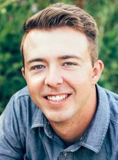

Quentin Naef | WDD 130
My name is Quentin Naef. I am from Pasco Washington and I am a CIT major with an empasis in Cyber Security. I am the oldest of 5, so you could say that I have always been the trial and error kid for my parents. I served my mission in Baltimore Maryland Mission, and also Washington DC North Mission. Some interesting facts about me is I made an acapella group with some friends and we audtioned to be the opening act for BYU Vocalpoint in Cour Dea'lane idaho and we won. I would say that my favorite hobbies can vary depending what I am in the mood for. One day I will want to be playing sports like vlleyball and basketball, and the next day I would rather chill and watch a movie or play games with my friends. I chose my major because my dad is a Software Engineer and I grew up around the industry. I love learning everything you can do with computers and they have always fascinated me. I can't wait to learn with you all in this class!